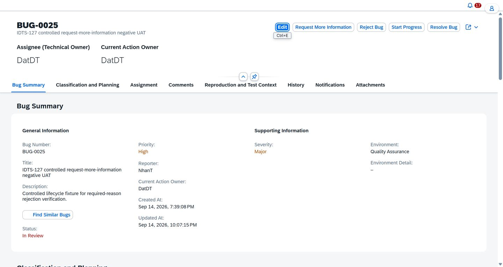

Complete atomic evidence
Case 79 — UAT-LIFE-014
Required lifecycle reason prevents submission when empty
Result
PASS WITH CATALOG ACTOR MISMATCH
PASS
Executor
NhanT (DonHV support)
Test definition
Precondition
Controlled BUG-0025 is In Review; DatDT is the assigned Developer and current action owner.
Action
Open Request More Information, leave Reason empty, and choose Confirm once.
Expected result
The action is blocked with a field-targeted message; status, history, notifications, comments, and attachments remain unchanged.
Observed assertions
- Chrome Work shared authentication identified DatDT with the Developer role.
- Exactly one blank-Reason Confirm displayed “This action requires a reason.” beneath the Reason field.
- The modal remained open after validation; Cancel closed it and no second submit was performed.
- After reload, BUG-0025 remained In Review with DatDT as technical assignee and current action owner.
- Comments, History, Notifications, and Attachments remained empty.
- The catalog declares TESTER; the controlled UI action was available to the assigned DatDT Developer. This mismatch is disclosed, not hidden.
Persistence readback
| Entity | Before | After | Reload |
|---|---|---|---|
| Bug status | In Review | In Review | In Review |
| Technical assignee | DatDT | DatDT | DatDT |
| Current action owner | DatDT | DatDT | DatDT |
| Comments | 0 | 0 | 0 |
| History | 0 | 0 | 0 |
| Notifications | 0 | 0 | 0 |
| Attachments | 0 | 0 | 0 |
Transport proof
Operation
BugService.requestMoreInformationUI request
One Confirm with blank Reason; no retry.
Safe response
Field message: “This action requires a reason.”
HTTP status
Not observable on the permitted Chrome surface; no HTTP 400 is claimed.
Provenance
Evidence kind
Current live UAT execution evidence summary
Execution source
Chrome Work · DatDT · Developer · BUG-0025
Structured evidence
baseline-before.json; life014-post-receipt.json; after-readback.json; final-reload-readback.jsonCatalog note
Case 79 declares TESTER; actual controlled actor was the assigned Developer.
Runtime screenshot

Final runtime readback after the rejected blank-Reason interaction: BUG-0025 remains In Review with DatDT ownership. The inline validation message was observed during execution but no separate persisted validation-state screenshot is available.
Evidence limitation: the field validation was captured in the browser-control transcript, while the persisted runtime image shows the final reload state. The generated card does not fabricate a Network response or validation screenshot.